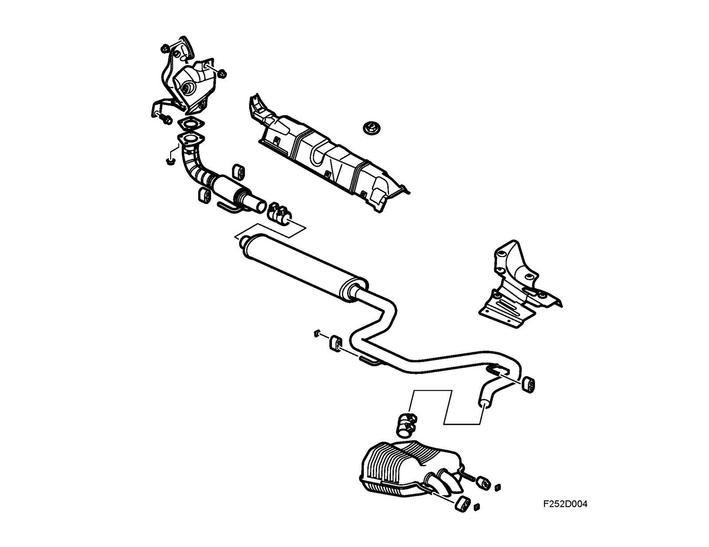

Brief Description
Brief description
Description
General
The exhaust system is designed to carry away the engine's exhaust gases with a low flow resistance, low noise level and long operational life.
The exhaust system comprises two parts: a front part with catalytic converter, and a rear part with two silencers. Both silencers are a combination of resonance and absorption silencer.
The system is delivered seamless, i.e. one unit. For spare parts there are three different sections: a front section with flexible pipe, a center section with front silencer, and a rear silencer.
The exhaust system is rubber-mounted at six points.
Corrosion protection
The exhaust system is protected against corrosion as all the parts except the outer plate of the front silencer are made of 12-18% chrome steel. The outer plate of the front silencer is aluminized.
This combination gives very good corrosion stability.
Heat shields
Heat shields are fitted above the exhaust system's most heat intensive zones to protect exposed parts where the heat radiation can otherwise cause problems.